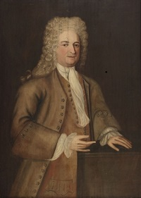

Tobias H. Ten Eyck
Tobias H. Ten Eyck was born in August 1717. As the third son of Hendrick and Margarita Bleecker Ten Eyck, he grew up in a Pearl Street home next to that of his grandmother, the Ten Eyck matriarch. He was known as "Tobias H. Ten Eyck" to distinguish him from a more Albany-based younger cousin and from younger same-named individuals as well.
It seems that early on the young man had taken up residence in Schenectady. In September 1750, Tobias was living there when married Albany native Rachel De Peyster at the Albany Dutch church. By the mid-1760s, at least seven children had been christened in Schenectady.
By that time, Tobias H. Ten Eyck was counted among Schenectady's wealthiest businessmen and was identified with the other borough fathers at the establishment of Schenectady in 1765. Two years earlier, he was counted among the principal freeholders of Albany County. He is said to have purchased the "Ten Eyck Patent" in 1769 which was located in the present town of Esperence.
Fifty-eight in 1775, this subject lived conspicuously in Schenectady during the war - declining to serve as a member of the Schenectady Committee but receiving a land bounty right for service afterwards. However, his wartime exploits are beyond the scope of this sketch. A middle son, John De Peyster Ten Eyck, was a prominent resident of Albany.
Tobias H. Ten Eyck had filed a will in August of 1774. It named his wife and six sons as heirs. The will passed probate in Albany in May 1785 - following his death a few months earlier at age sixty-seven. He was known as "one of the wealthiest citizens of Schenectady." His widow then probably returned to Albany, survived until 1787, and was buried from the Albany church.
Portrait by John Heaton in the collection of the Albany Institute of History and Art.
This excerpt (included here for ease of access) was taken from Centennial address relating to the early history of Schenectady, by John Sanders (1879), pp. 176-77: "Tobias Ten Eyck, son of Hendrick, of Albany, and Margaret Bleecker, his wife, born August 15th, 1717, married, September 7th, 1750, Rachel, daughter of Johannes De Peyster, of Albany, He was then, and had been for a short time before that, settled as a merchant at Schenectady. He built and lived in the mansion, subsequently owned and occupied by Govenor Joseph C. Yates, ____ lastly by Nicholas Cain, deceased, situated on Front street. He died February 9th, 1785, aged 67 years, 5 months, 24 days, reputedly then the most wealthy citizen of Schenectady. He was buried under the Dutch Church in Albany."